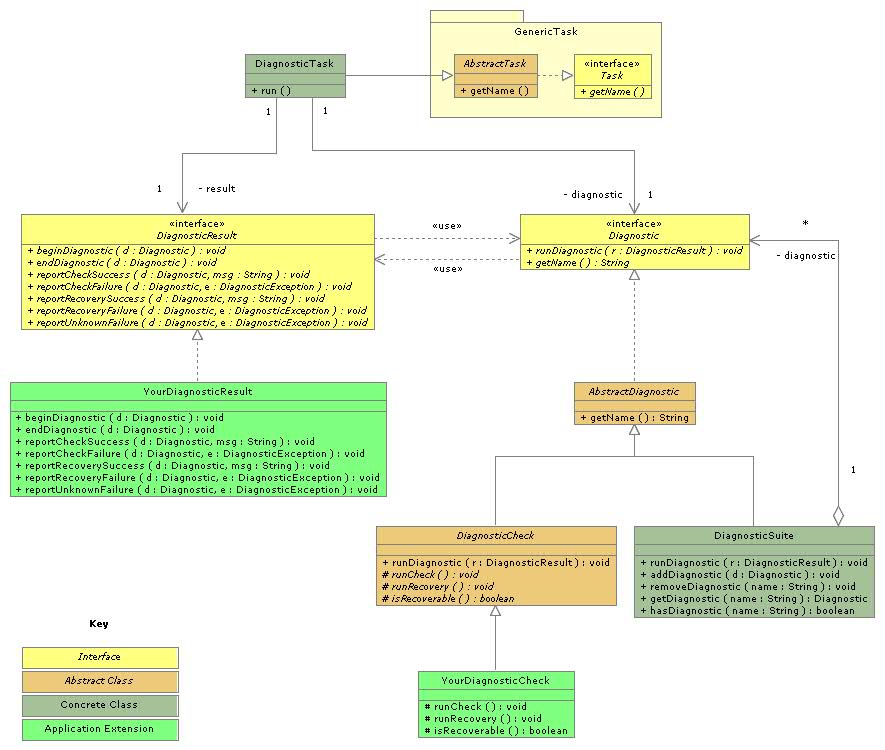

Diagnostic Subsystem
The Diagnostics Subsystem provides extensible functionality for defining, executing, and reporting on
diagnostic tests that check system properties and other meaningful information. Diagnostics can be grouped into
suites and scheduled to run a system tasks. The following UML diagram provides an overview of the key classes
in the Diagnostics Framework:
